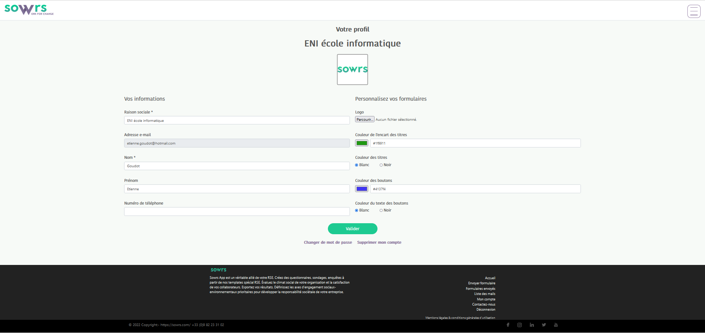
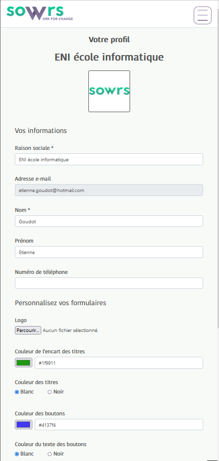
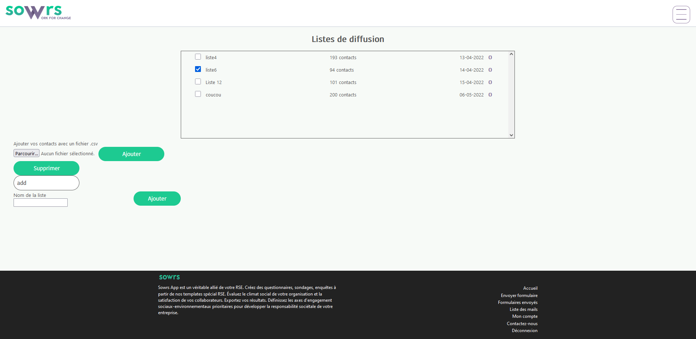
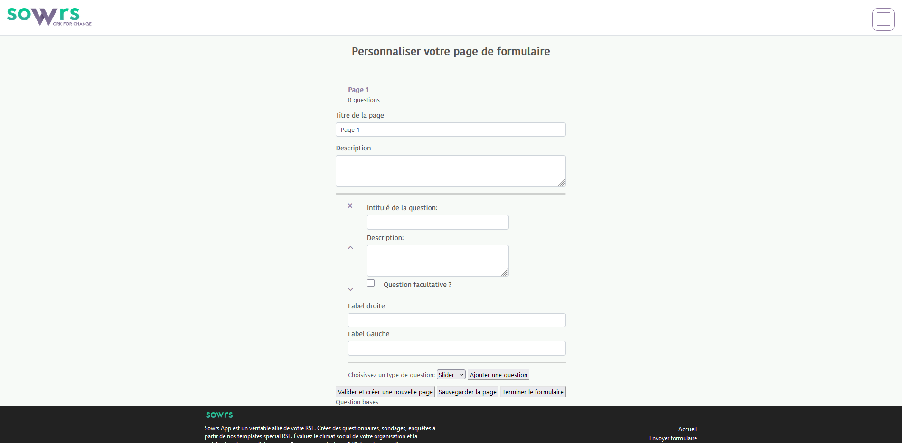

Projet d'application de climat social
Equipe
Temps
2 mois
Technologies
Symfony / PHP / Twig / HTML / CSS / Javascript / Doctrine
Context
Afin de valider mon année de developpeur web et web mobil, j'ai effectuer chez SWORS un stage de 2 mois ou j'ai du concevoir et réaliser un projet d'application web
Résumé
L'application doit permetre aux clients de SOWRS de pouvoir effectuer des sondages aupres de leurs collaborateurs afin de rendre compte du climats social. SOWRS a la possibilité de créer de nouveau formulaires disponible par la suite à leurs clients qui peuvent ensuite les envoyers a des listes de contact. Une fois que les contacts ont répondues, les réponses sont mises en commun afin de rendre un bilan.
Equipe |
|
Temps |
2 mois |
Technologies |
Symfony / PHP / Twig / HTML / CSS / Javascript / Doctrine |
Context |
Afin de valider mon année de developpeur web et web mobil, j'ai effectuer chez SWORS un stage de 2 mois ou j'ai du concevoir et réaliser un projet d'application web |
Résume |
L'application doit permetre aux clients de SOWRS de pouvoir effectuer des sondages aupres de leurs collaborateurs afin de rendre compte du climats social. SOWRS a la possibilité de créer de nouveau formulaires disponible par la suite à leurs clients qui peuvent ensuite les envoyers a des listes de contact. Une fois que les contacts ont répondues, les réponses sont mises en commun afin de rendre un bilan. |

Vue de la page de profil sur ordinateur

Vue de la page de profil sur un smartphone

Vue de la page des listes de diffusion
